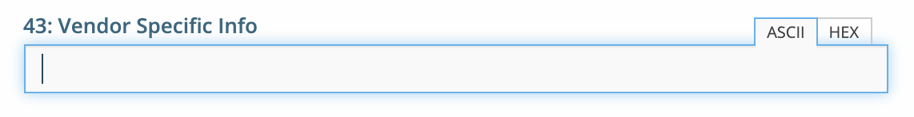

Note
DHCPv4 and DHCPv6 scopes inherit DHCP and DDNS Options from the parent DHCP server. DHCPv4 and DHCPv6 reservation inherit DHCP and DDNS options from the DHCP scope. However these options may be changed by editing the options for the specific scope or reservation.
Edit DHCP Options
View the configured DHCP options for a DHCP scope
Select the DHCP scope in the network list
Click on the Edit DHCP options task.
A dialog is displayed. Note that in order to see the options that have inherited values, the Show inherited options checkbox needs to be checked.
{kind=link}
Add a new DHCP option
Start typing into the Add an option field. Either type in the name of the option or the option number.
A list of available options will be displayed as you type.
{kind=link}
Select the option you want to add.
The option is now shown in the list and you can add values to the option.
Configuring DHCPv6 and DDNS Options (Microsoft Only)
Go to :guilable:`Admin` in the web UI and click on :gulabel:`Server Management`
Expand DHCP Servers and select Microsoft DHCP
Select one or multiple servers, hover over the selected server(s) and click on the ellipsis (or meatball) menu
Click on the Edit DHCPv6 Options task
Under the Options tab, select the appropriate options
{kind=link}
Click on the DNS tab and select whether you’d like to Enable DNS dynamic updates according to the settings below
Always dynamically update DNS records
Discard AAAA and PTR records when lease is deleted
{kind=link}
Click Save to save your settings
Removing a DHCP option
Hovering over an option will display a trashcan icon to the right of the option.
Clicking on the trashcan will remove the option.
HEX and ASCII representation
Some DHCP options, such as DHCP option 43 (Vendor specific info) require the value to be in HEX format. In this case the UI offers the value to be viewed both as HEX and ASCII by selecting each option in tabs above the field, as seen in the figure below.
{kind=link}